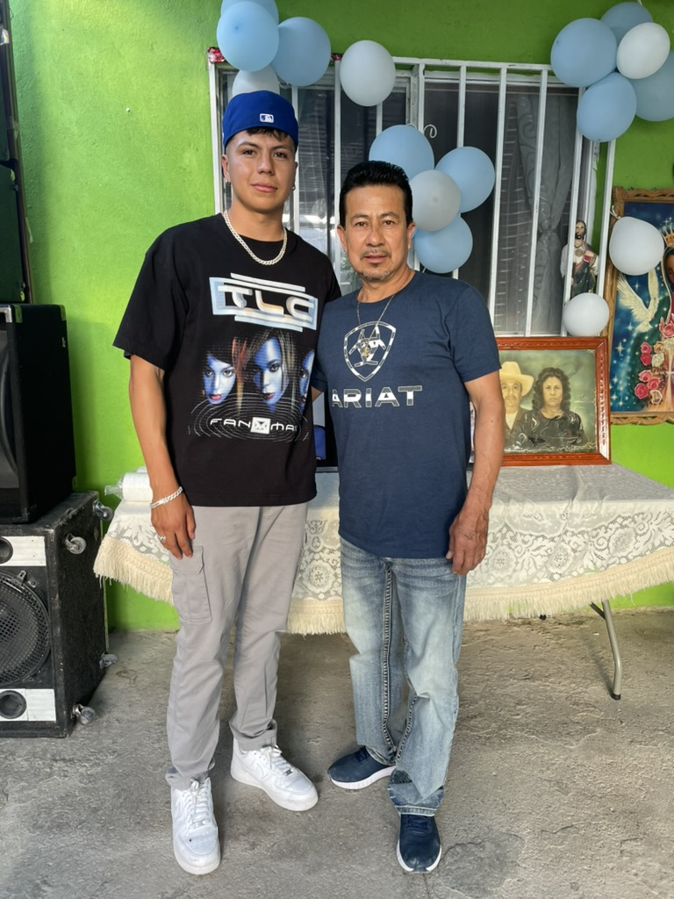
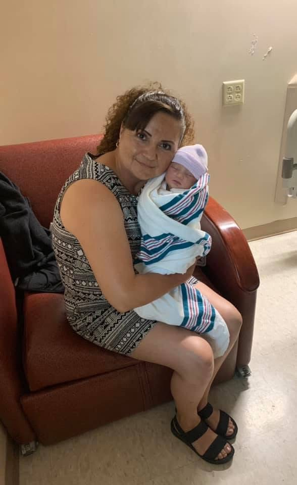

My Family
Here’s a bit about my family, the amazing people who have shaped who I am today and continue to inspire me every day.
My Father
My father is a hard worker and a strong person. He leads by example and always shows me how to face challenges head-on. From a young age, I learned from him the importance of being determined and always supporting your family. He taught me things like how to change a tire, fix things around the house, and play soccer. But what really stands out is how he showed me what it means to be a good man—someone who is honest, patient, and kind. I look up to him not only as my father, but also as a mentor. His wisdom has always guided me, and I’m grateful for everything he’s taught me.
My Mother
My mother is the heart of our family. She’s the one who holds everything together with her love and care. She’s always been my biggest supporter, encouraging me to follow my dreams and never give up. Everything I do is to make her proud because she’s my biggest motivation. Her love and strength have shaped me in so many ways, and I’m lucky to have her as my mom. She is my constant support, and I know that no matter what happens, she’ll always be there for me.
My Siblings
I have three siblings—two brothers and one sister—and I’m really close with all of them. My younger brother and I are best friends. We’re only a year apart, so we’ve grown up doing everything together. From playing video games to just hanging out, we’ve shared a lot of great memories.
My older brother has always been someone I admire. Now that he’s married and has a family, I see him as a role model. He’s always been there for me, and I look up to him for his wisdom and how he handles life.
Then there’s my older sister, who is the "princess" of the family. We always look out for her, making sure she’s okay. She has a kind heart and brings so much joy to our family. We love teasing her, but we’re always ready to protect her and support her in everything she does.
Together, we’ve shared many happy memories and helped each other through tough times. My siblings are not just family—they’re my best friends. Our bond is strong, and I’m thankful for them every day.